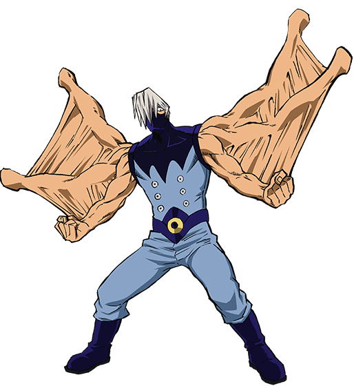

Mezo Shoji
Nome de Herói: Tentacole
Individualidade: Dupli-Arms – Possui tentáculos que podem replicar seus órgãos sensoriais, como criar bocas, orelhas ou olhos extras nas pontas para espionagem e combate.
Perfil:
Gigante gentil. É muito maduro, protetor e calmo, preferindo não chamar atenção para si e sempre cobrindo o rosto com uma máscara.